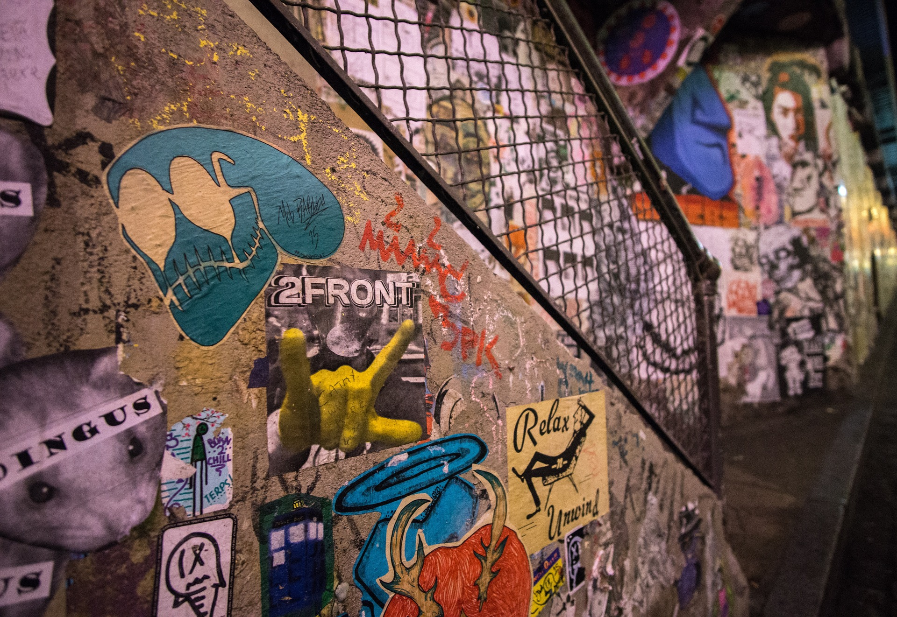

Graffiti has been seen as one of the most controversial forms of art for decades. Once known solely as a form of vandalism, it has gained much respect in artistry and popularity amongst the masses. These public pieces were used to makes statements and were a medium for social expressions. Graffiti now play a role in many cultures and different techniques have risen, and the art of graffiti gained many facets.
Wildstyle, bombing, and tagging are just some of the types of graffiti used by artists. These styles are typical and sometimes complex. They can consist of 1 or more colors, sometimes a little abstract, and often done quickly by artists. Often times these styles are used as signature or emblem that represents the artists and sometimes not legible. As far as in fonts, wildstyle uses fonts that have spikes, arrows, and curves while bombing uses more bubbly circular techniques. Tagging uses one color and is the simplest form of a signature used by artists.
Typically when people think of graffiti they think of large (spray)painted pieces but that’s not always the case. Stencils, stickers, and posters with the combination of tags are sometimes used. The use of stencil is a quick way for artists to show art pieces. Stickers and poster can be used individually or together combined with tags to make intricate designs or patterns by artists.
When it comes to certain grafitti, the location matters. Some artists create Heaven, Blockbuster, or monument pieces. These types of graffiti are large, taking up a vast amount of space in one particular section. Heaven pieces are usually up in high locations like rooftops and billboards. Blockbuster and Monument pieces can be found closer to ground levels over large sites. Walls, trains, gates, buses, etc. With these types of pieces the artists tend to create memorials or art that have an important meaning.